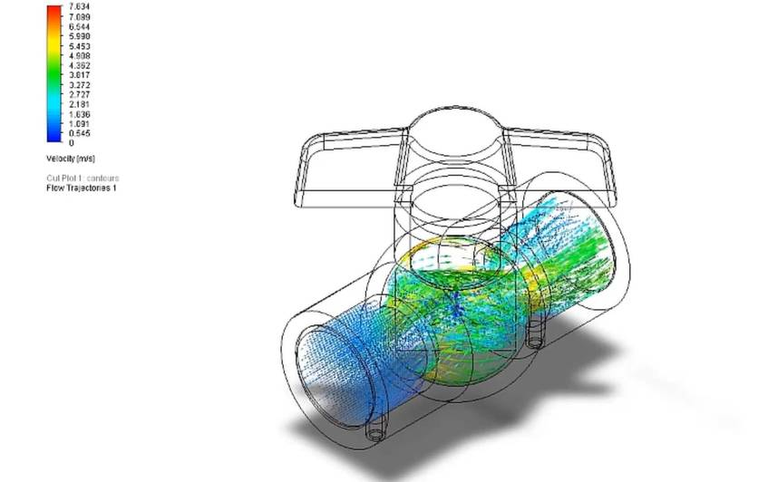
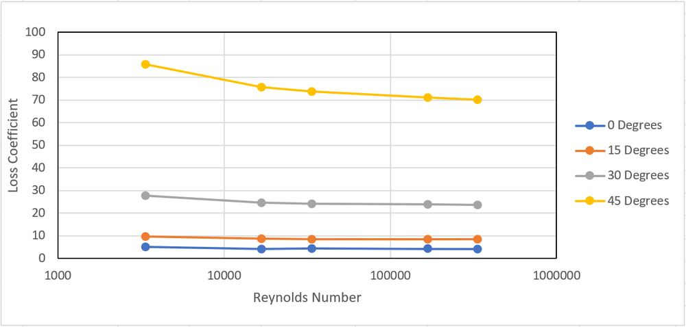
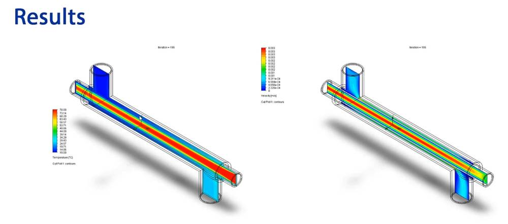
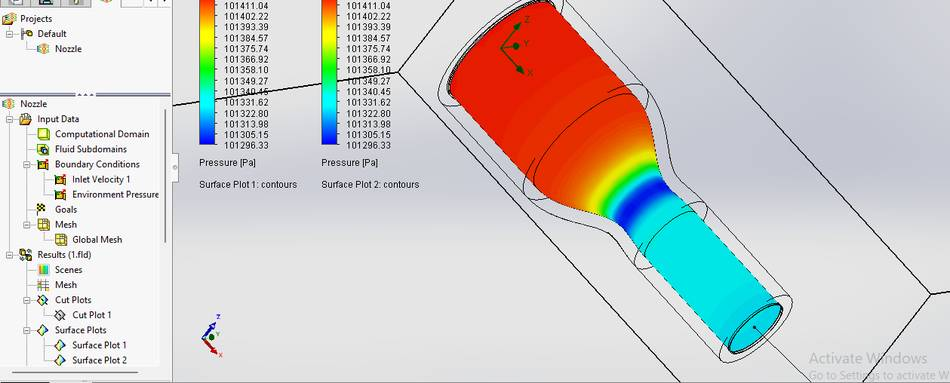
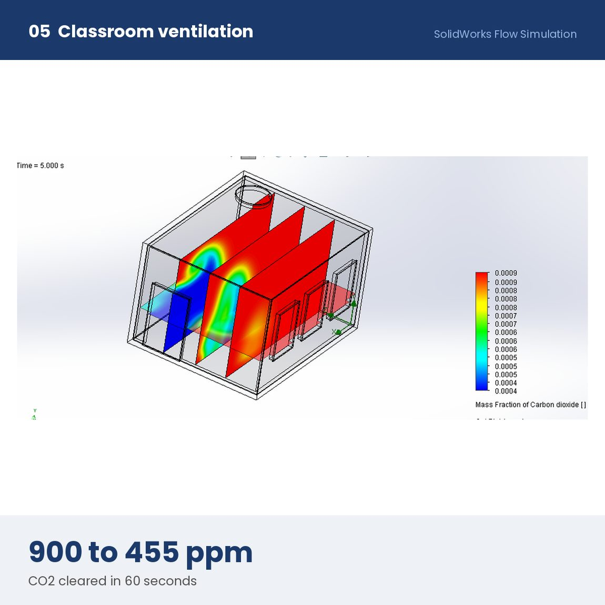
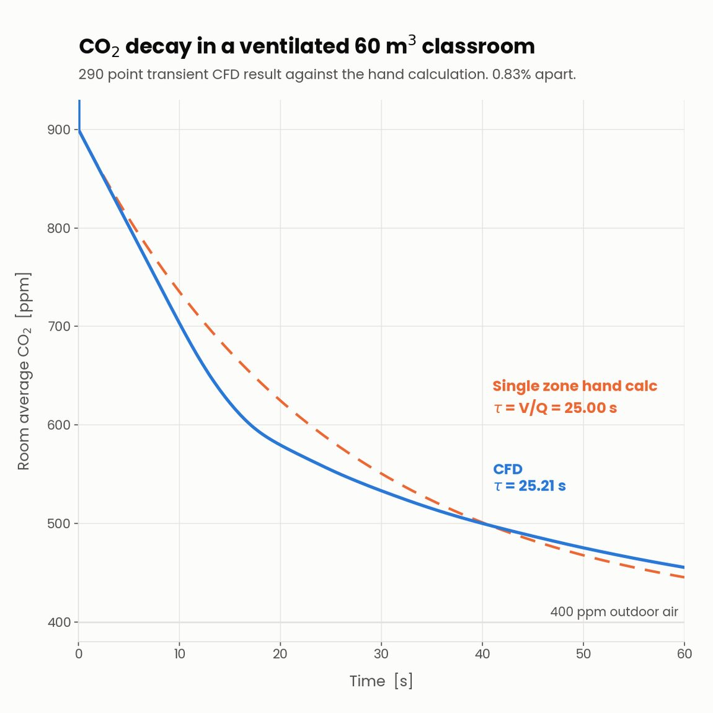
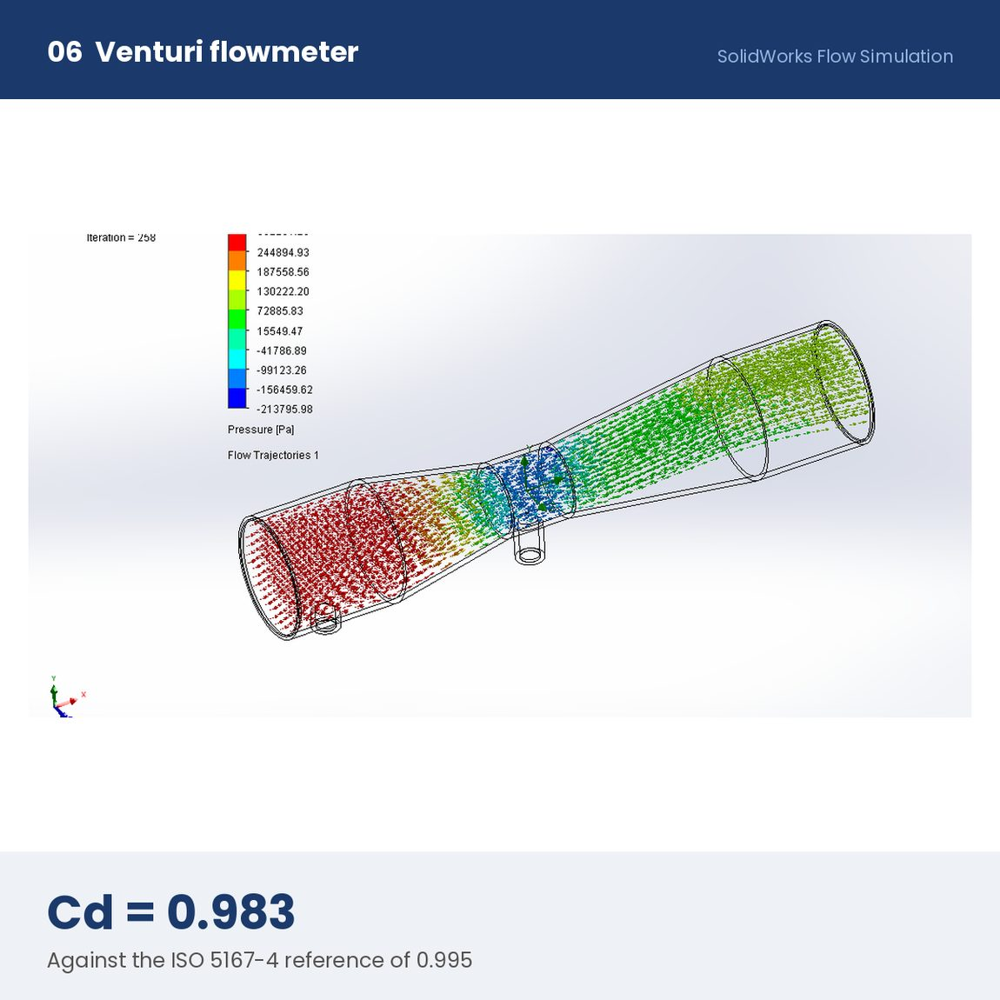
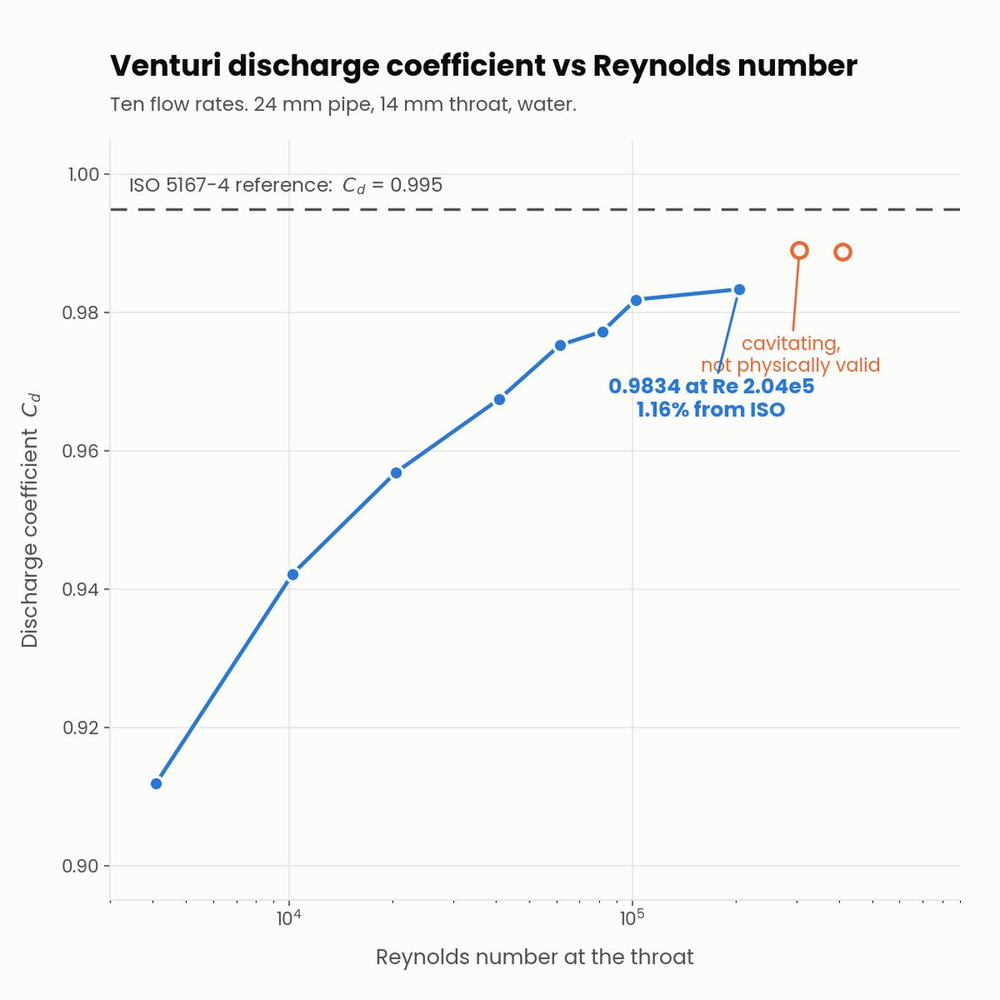

03 / SIMULATION
Trust, then verify.
Five fluid and heat-transfer studies, paired with analytical calculations. The solver is only one part of the answer.
Five applied fluid and heat transfer problems solved in Flow Simulation and hand-calculated from theory first, so the solver was checked against the analysis rather than trusted on its own: a reduction nozzle, loss coefficient across a ball valve, a counter-current heat exchanger, indoor air change under ventilation load, and a venturi flowmeter.
The ball valve study swept inlet velocity from 0.1 to 10 m/s at four opening angles and reduced each run to a loss coefficient. Plotted against Reynolds number the curves flatten above roughly Re 30,000, which is the behaviour the textbook predicts and a useful check that the model was set up correctly.







